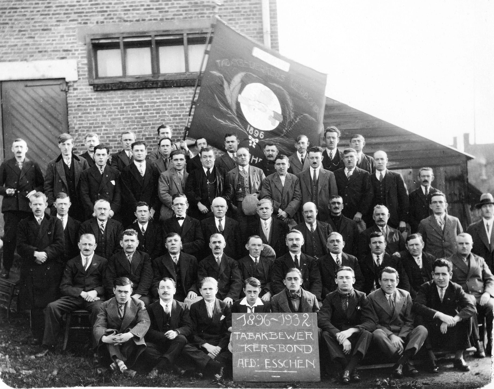

Jeugdjaren
Wie was eigenlijk Sooi Noldus?
Sooi werd geboren in 1897 in de Statiestraat 243 (Venezia) als zoon van Louis Noldus en Liza Van Hooydonck. Enkele jaren later verhuisde het gezin naar het Sint Antoniusplein 18. Vader Noldus was slachter en werd opzichter van de gasmaatschappij in Kapellen. Het gezin telde 8 kinderen Anna, Angeline, Sooi, Ward, Jos, Maria, Mon en Miel.
Sooi groeide op als kleine jongen in de plattelandsgemeente Essen, waar buiten een paar uitzonderingen, arme mensen leefden en werkten in de meest schrijnende ellende. Buiten de landbouw , ambachten en neringdoeners was er weinig voor de werkvoorziening. Er waren een paar koffiebranderijen De Biggelaar, Laane en Segers, het boterfabriek van Milaan en Smout plus enkele sigarenfabrieken. Nadien kwamen er een aantal diamantslijperijen bij : Van de Wijngaert, Van Berkelaer, Wim Merks, Jacobus Relage, Frans Van Herck en Jan Stroop. Er was nog het Capsulefabriek Deventer, Confiserie Lonka, pannen- en betonfabriek Loos en Van Dorst Handelsstraat en de koekjesfabriek aan de Kammenstraat.
De arbeiders moesten daarom in de nabijgelegen gemeenten en Antwerpen gaan werken. Zo kwamen er ook sigarenmakers van de Nieuwmoer dagelijks 10 km te voet naar de sigarenfabriek Gebr. Van Roosendaal te Essen.
Sooi ging naar school, maar buiten gewijde geschiedenis en wat rekenen leerden de kinderen niet veel. Sooi ging als 8 jarig kind koe wachten bij Ko Doggen net over de grens van 3 uur ’s namiddags tot 7 uur voor een dubbele boterham met spekvet en bruine suiker. Zo werd er thuis een maaltijd uitgespaard.
De moeder van Sooi stierf in 1908 op 36 jarige leeftijd aan galstoornissen. Sooi was toen 11 jaar.
Bij zijn plechtige communie (11 jaar) kreeg hij voor het eerst een kostuum en schoenen. Het was ook de moment om te stoppen met naar school te gaan en Sooi werd in post gezet bij een oom, een hout- en marmerschilder, in Antwerpen. Omdat hij slechtgekleed was en onvoldoende geschoold werd van zijn diensten af gezien. Hij leerde voor het eerst het verschil tussen arm en rijk kennen. Hij ging dan in de leer naar de diamantslijperij in Kalmthout waar hij 1,15 fr per week verdiende.
In de maanden die de oorlog 1914-1918 voorafgingen leefde de bevolking tussen hoop en vrees. Vele hadden hun oproepingsbevel ontvangen om hun eenheid te vervoegen. Hartverscheurende tonelen spelen zich af bij het afscheid van vrouw en kinderen.
Op 1 augustus 1914 worden de klassen 1905 tot 1912 gemobiliseerd maar Sooi wordt niet opgeroepen want hij wordt pas 18 in oktober 1915. Vele Belgen vluchtten de grens over naar het neutrale Nederland. Ook de vader van Sooi met de 8 kinderen gaan naar het Hollandse Gouda. Zij werkten in de moestuin van een groentekweker. Ze keren na enkele weken terug en Sooi vindt werk bij diamantslijperij A. Van den Wijngaert in de Kerkstraat.